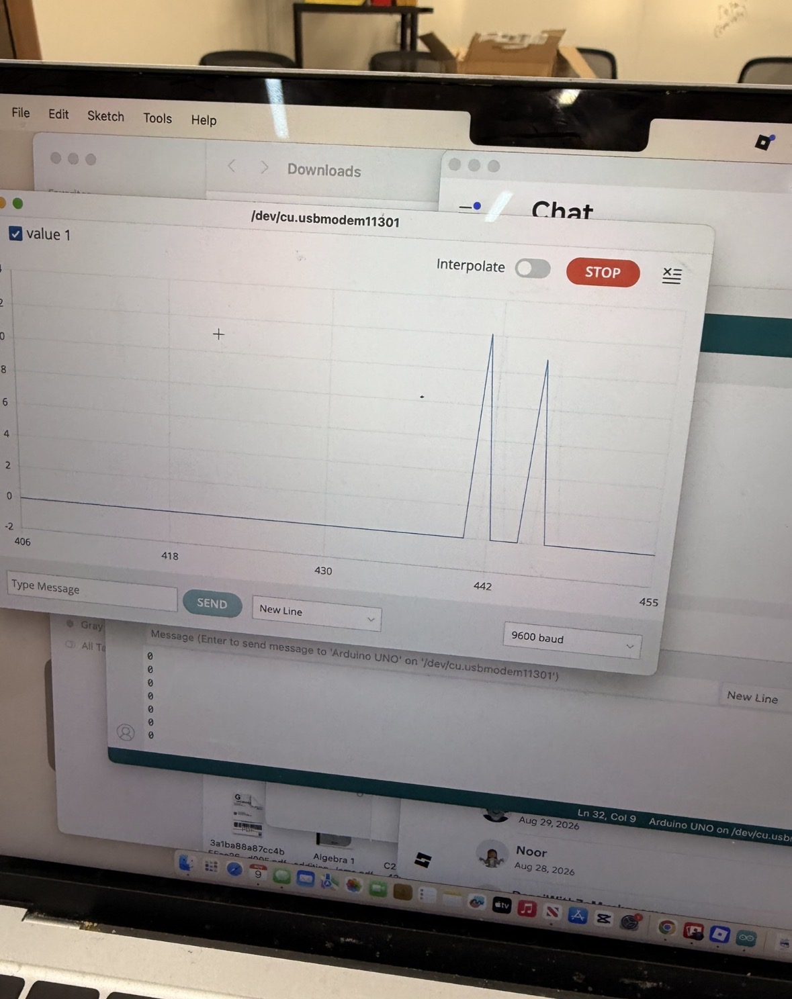
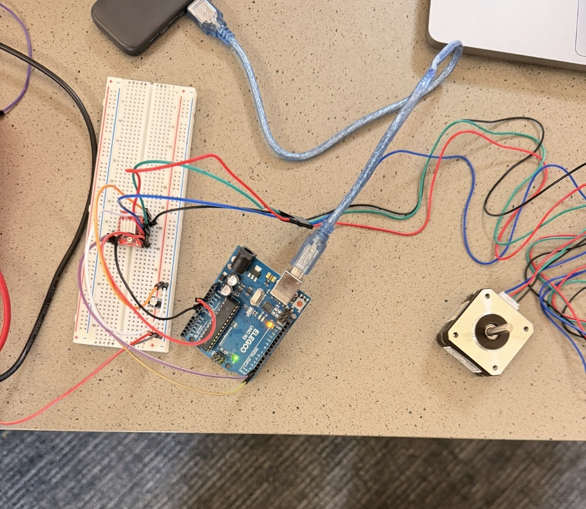
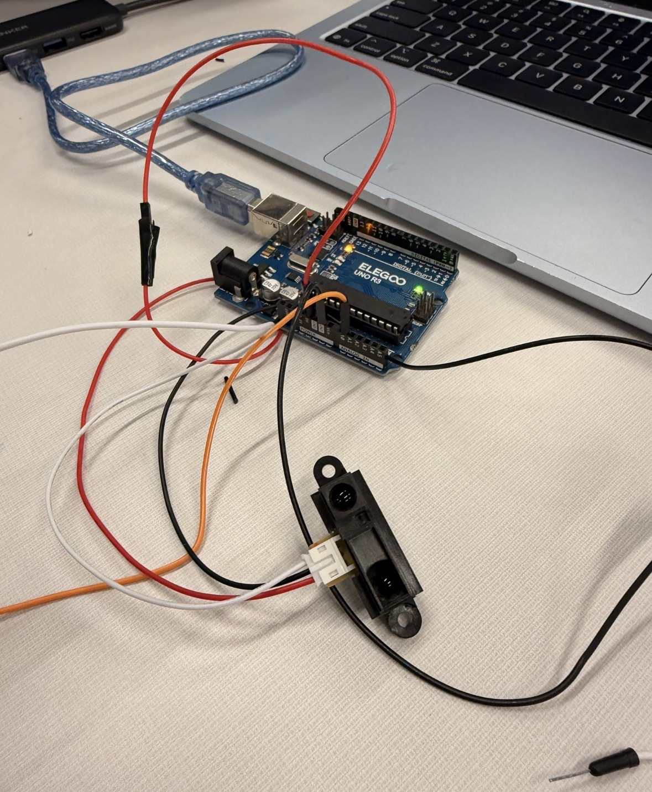
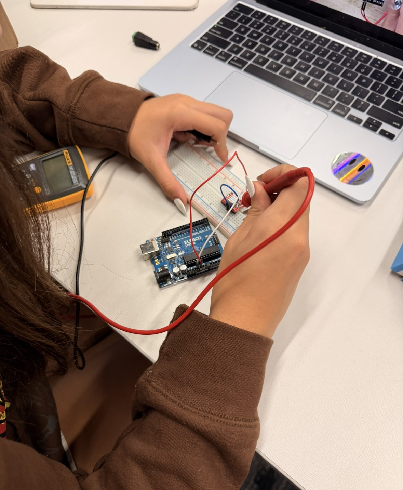
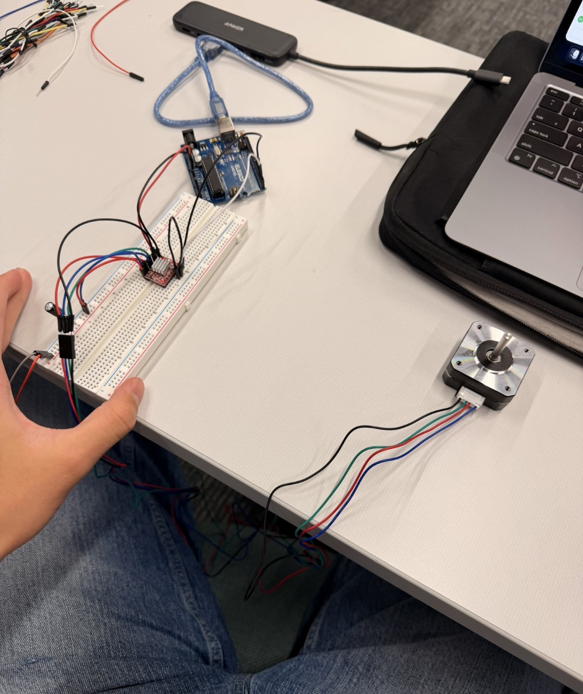
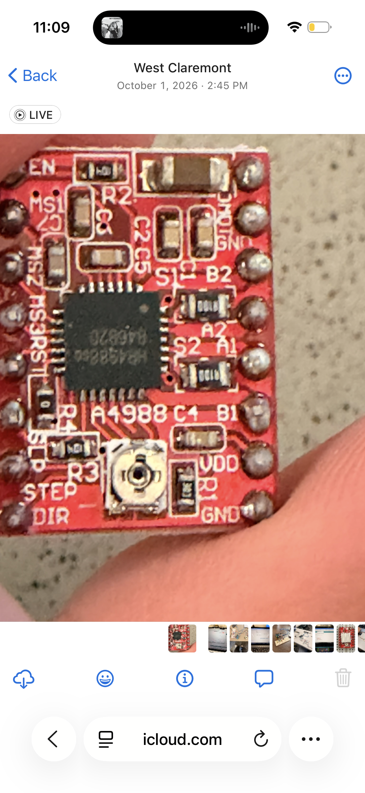

Process and Challenges
First, Evan and I started off by attempting to wire the NEMA 17 stepper motor using this YouTube video:
But we were having trouble with the multimeter getting the correct voltage.
To fix the problem we had to take out all the wires and use a lot of trial and error until we figured out that there may have been something wrong with the multimeter
After figuring out the voltage, we used this code:
#include
For the IR Scanner, we used Colin’s journal entry from last year to figure out the wiring. We had to strip the wires of the IR scanner because they would not go into the Arduino, but the wires kept falling out of the holes, so we stripped them even more, but this problem still continued. So we decided to use Male-to-Female jumper wires by inserting the open wire into the female side and securing it with electrical tape and putting the male side directly into the arduino.
Wiring: Black - GND Red - 5V White - A0
We then asked ChatGPT: can you make the code calculate the distance for arduino to connect to an IR distance sensor With this code it kept giving me an error message: Error: programmer is not responding
Warning: attempt 1 of 10: not in sync: resp=0x00 But I figured out that the Arduino IDE app was connecting to the wrong port, but anther problem that occurred was the scanner kept glitching and not detecting any object and it was also not syncing with the Serial Plotter to create the graph so I asked ChatGPT to make me a new code with these qualities
#include
Then we used the Serial Plotter to create a graph of the Voltage vs. Distance
Reflection
Throughout this project, Evan and I learned how to wire and troubleshoot an Arduino, stepper motor, and IR distance sensor. Although we faced challenges with the multimeter, loose wires, and Arduino connection errors, we solved them through trial and error. We also learned how to use code and the Serial Plotter to measure and graph voltage versus distance. This helped us build a foundation for creating our 3D scanner.
Next Steps
Our next step is to combine the stepper motor and IR sensor. The motor will rotate the platform while the IR sensor measures the distance of the object at different angles. We will collect these measurements and use them to generate a 3D model of the scanned object.

Graph

Stepper Motor Wiring

IR Scanner Wiring

Using Multimeter to find voltage

Stepper Motor

A4988 stepper motor driver module